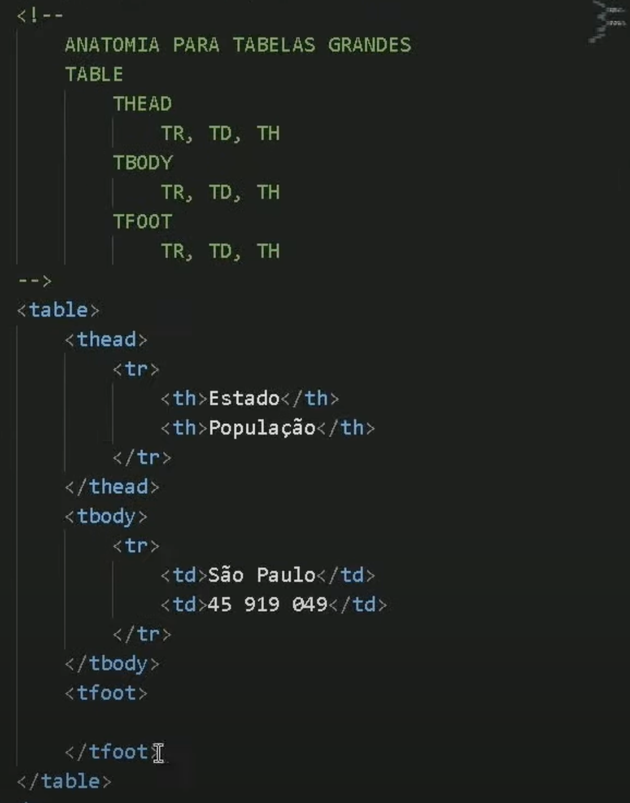

Para fazer uma tabela, se deve usar a tag table. Dentro desta tag, se usa as tags tr (table row - linha de tabela). Dentro da tag tr, usa-se as tags th (table header - caebeçalho da tabela) e td (table data - dado da tabela)

Formando assim:
| A1 | B1 | C1 |
Para fazer outras linhas, basta usar outras tags tr, da mesma forma:

| A1 | B1 | C1 |
| A2 | B2 | C2 |
| A3 | B3 | C3 |
| A4 | B4 | C4 |
Para criar as bordas e divisões da tabela, se deve usar CSS. Assim, deve-se criar parâmetros em CSS para editar com widht (largura), background-color, padding, border e border-collapse (para fazer uma única divisão, pois no padrão vem de forma "dupla".

| A1 | B1 | C1 |
| A2 | B2 | C2 |
| A3 | B3 | C3 |
| A4 | B4 | C4 |
Ou:
| A1 | B1 | C1 |
| A2 | B2 | C2 |
| A3 | B3 | C3 |
| A4 | B4 | C4 |
Para mudar a posição dos dados dentro da tabela, deve-se usar os parâmetros text-align e vertical-align:
text-align: left, center ou right
vertical-align: top, middle ou bottom
| A1 | B1 | C1 |
| A2 | B2 | C2 |
| A3 | B3 | C3 |
| A4 | B4 | C4 |
Para tabelas maiores, deve-se usar tag semântica para facilitar mecanismos de busca. Entre elas estão: thead, tbody e tfoot.
Em thead é melhor usar a tag th para criar dados que serão como títulos ou áreas. Sendo a classificação ou parâmetro da tabela.
Em tbody usas-se, preferencialmente, a tag td para inserir os dados.
tfoot é o rodapé da tabela.
Usa-se caption para dar título para a tabela.
Scope é usado dentro da tag th para dizer onde estarão os dados referentes a este parâmetro. Por exemplo, os dados do parâmetro Estado estão na mesma coluna, então deve-se usar dentro da tag th de Estado o elemento scope="col".
No caso do Total, o dado não está na mesma coluna e sim na mesma linha, então deve-se usar scope="row".
| Estado | População |
|---|---|
| Acre | 906,876 |
| Alagoas | 3,351,543 |
| Amapá | 877,613 |
| Amazonas | 4,268,224 |
| Bahia | 15,226,371 |
| Ceará | 9,187,103 |
| Distrito Federal | 3,366,171 |
| Espírito Santo | 4,064,052 |
| Goiás | 7,344,281 |
| Maranhão | 7,177,291 |
| Mato Grosso | 3,603,902 |
| Mato Grosso do Sul | 2,809,394 |
| Minas Gerais | 21,292,666 |
| Pará | 8,903,064 |
| Paraíba | 4,039,277 |
| Paraná | 11,516,840 |
| Pernambuco | 9,616,621 |
| Piauí | 3,281,480 |
| Rio de Janeiro | 17,463,963 |
| Rio Grande do Norte | 3,534,165 |
| Rio Grande do Sul | 11,466,687 |
| Rondônia | 1,816,687 |
| Roraima | 652,713 |
| Santa Catarina | 7,416,556 |
| São Paulo | 46,289,333 |
| Sergipe | 2,359,444 |
| Tocantins | 1,625,140 |
| Total | 213,99 milhões |
Para fazer um efeito "zebrado" para facilitar a leitura, usa-se "table tr:nth-child(2n)" e o backgorund-color.
Agora uma tabela com cabeçalho fixo usamos em table a função style="position: relative;" e em thead tr a função style="position: sticky; top: 0;">
| Posição | Equipe | Pontos | Vitórias | Saldo de Gols |
|---|---|---|---|---|
| 1 | Roma | 85 | 26 | +50 |
| 2 | Inter de Milão | 82 | 25 | +48 |
| 3 | AC Milan | 78 | 24 | +45 |
| 4 | Juventus | 72 | 22 | +40 |
| 5 | Napoli | 68 | 21 | +35 |
| 6 | Lazio | 65 | 20 | +30 |
| 7 | Fiorentina | 60 | 18 | +25 |
| 8 | Atalanta | 58 | 17 | +20 |
| 9 | Udinese | 55 | 16 | +15 |
| 10 | Parma | 50 | 14 | +10 |
| 11 | Sampdoria | 45 | 13 | +5 |
| 12 | Bologna | 42 | 12 | +3 |
| 13 | Cagliari | 40 | 11 | +1 |
| 14 | Hellas Verona | 38 | 10 | -2 |
| 15 | Spezia | 35 | 9 | -5 |
| 16 | Genoa | 32 | 8 | -8 |
| 17 | Udinese | 30 | 7 | -10 |
| 18 | Fiorentina | 28 | 6 | -12 |
| 19 | Empoli | 25 | 5 | -15 |
| 20 | Venezia | 20 | 4 | -20 |
Para mesclagem de linhas, usa-se o atributo rowspan, assim é possível combinar várias linhas em uma única célula.
| Celula 1 e 4 mescladas com rowspan | Celula 2 normal | Celula 3 normal |
| Celula 5 e Celula 6 mescladas com colspan | ||
Atributo colspan é usado para mesclar células horizontalmente, combinando várias colunas em uma única célula.